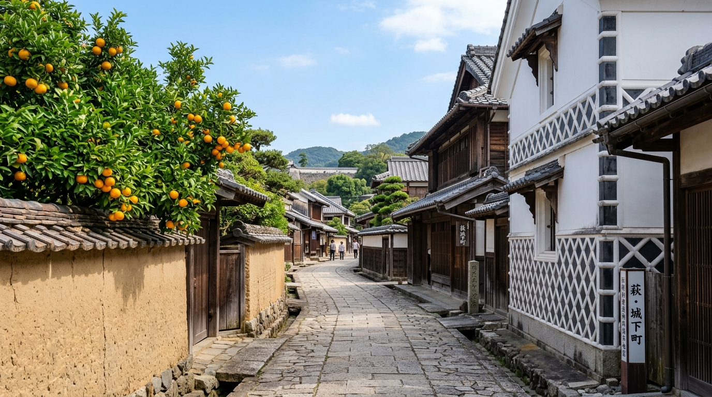
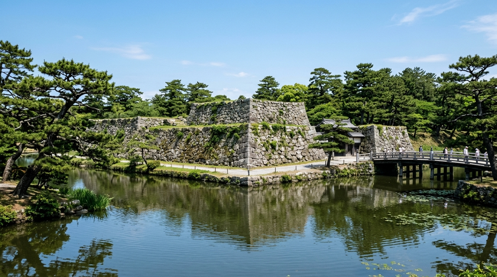
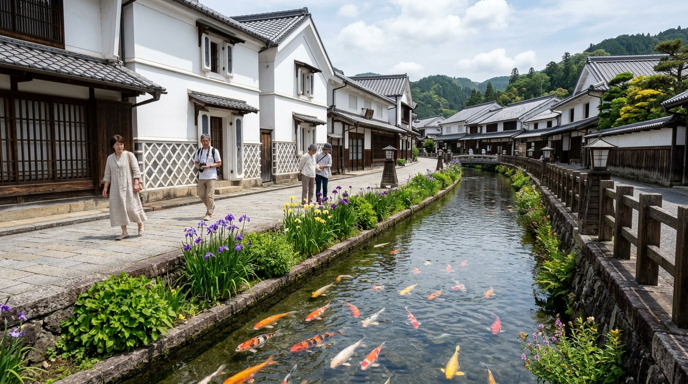
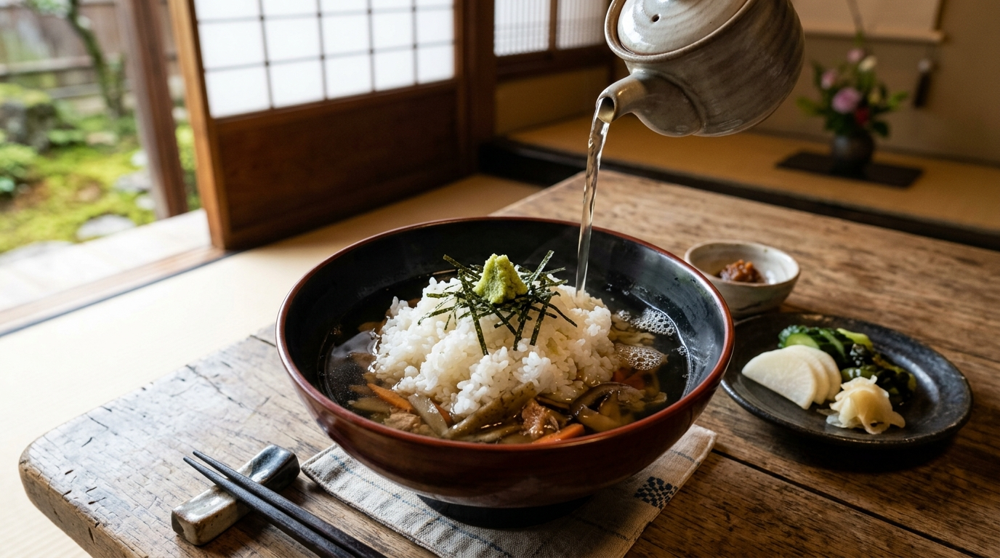
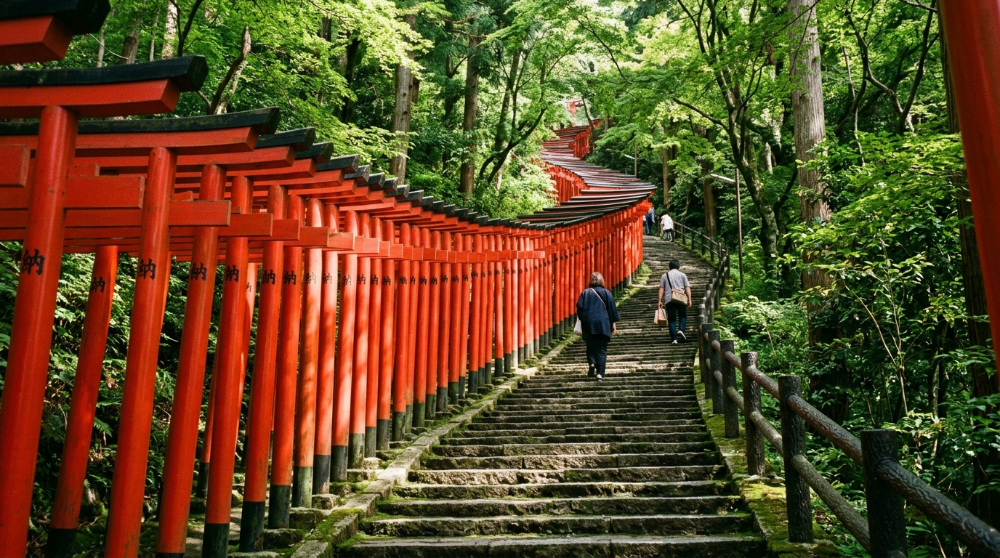
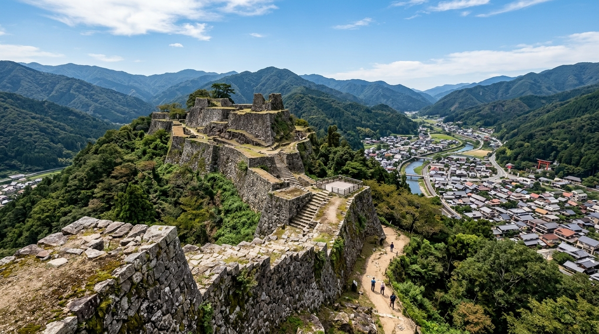
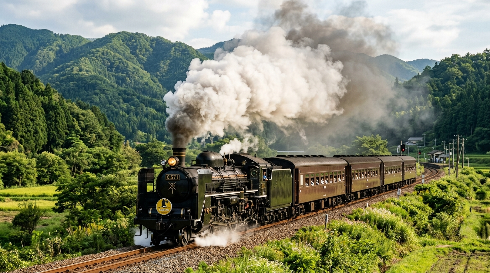
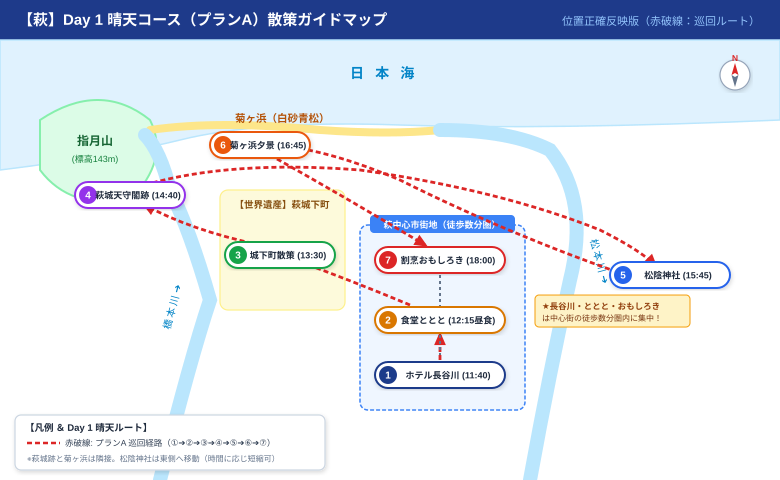
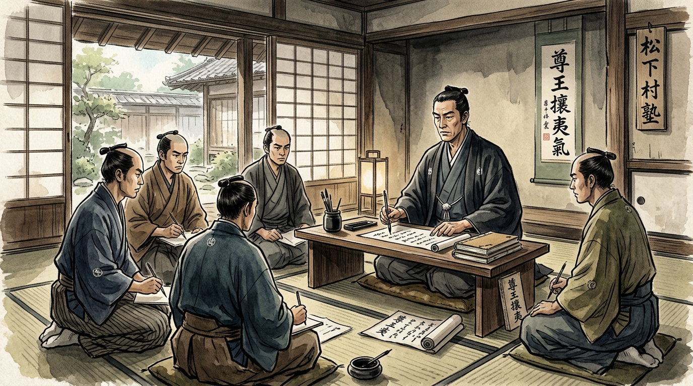

新山口駅 新幹線改札前 集合 ➔ スーパーはぎ号
各自手配の新幹線（新大阪8:33発のぞみ等）で新山口駅に10:25までに集合。10:40発直行バス「スーパーはぎ号」で萩バスセンターへ快適直行（約60分）。
ビジネスホテル長谷川（手荷物預け）
萩バスセンター到着後、北へ徒歩約3分の宿へ。重い宿泊手荷物をフロントに預け、身軽になって城下町へ出発！
① みなと食堂 ととと
萩港・浜崎地区入口の海鮮食堂。平政や瀬つきアジ、サザエなど日本海の新鮮な魚介を惜しみなく盛った名物海鮮丼や定食が絶品！

世界遺産② 世界遺産 萩城下町散策
江戸時代の町割りがほぼ現存する奇跡の町。白壁となまこ壁、夏みかんがのぞく土塀の武家屋敷通り。菊屋家住宅、木戸孝允旧宅、高杉晋作誕生地、鍵曲などを巡ります。

国指定史跡・100名城③ 萩城天守閣跡（指月公園）
毛利輝元公が慶長9年（1604年）に築城した萩城（指月城）の遺構。巨石の天守台石垣とお堀、旧厚狭毛利家萩屋敷長屋が残ります。高杉晋作誕生地から北西へ約20分、菊ヶ浜に隣接。
④ 松陰神社・松下村塾
吉田松陰先生を祀る神社。わずか8畳と10畳半の木造平屋「松下村塾」から日本の近代化を担った逸材たちが巣立ちました。至誠館（宝物殿）では直筆書状を展示。
⑤ 菊ヶ浜（夕景鑑賞）
萩城跡のすぐ東隣に広がる白砂青松の海岸。指月山を背景に日本海へ沈む夕日が海岸線を黄金色に染め上げる至高のひととき（日没目安 17:20頃）。
菊ヶ浜 ➔ ホテル長谷川（手洗い・上着調整）➔ おもしろき
距離約1.8km。足腰の負担を避けタクシーで移動（約6分・約900円/3名）。旅館「萩一輪」玄関前でタクシーに乗車し、ホテル長谷川へ。部屋で手洗い・上着調整など身支度後、徒歩4分（350m）でお店へ向かいます。
⑥ 居魚屋 おもしろき（創作会席）
高杉晋作の辞世の句から命名された地産地消の名店。長門和牛ステーキ、萩近海の鮮魚盛り、地酒「東洋美人」などを堪能。
萩バスセンター ➔ 津和野駅前（手荷物預け）
朝08:40にホテル発。防長路線バスで津和野へ直行（車窓の山里風景を満喫）。津和野駅到着後、コインロッカーに宿泊荷物を預けて手ぶら散策開始！

美観地区・散策① 殿町通り（とのまちとおり）
白壁となまこ壁が続く山陰の小京都。掘割を優雅に泳ぐ約400匹のカラフルな錦鯉。藩校養老館跡や、珍しい畳敷きの津和野カトリック教会（昭和6年建築）を見学。

日本五大名飯② 郷土料理 うずめ飯（沙羅の木 松韻亭）
日本五大名飯の一つ。ご飯の下に鯛、椎茸、豆腐、山菜などの贅沢な具材を「埋め」た歴史的伝統食。熱い和風出汁とすりおろしわさびを溶いていただく優しい味わい。

日本五大稲荷③ 太皷谷稲成神社（たいこだにいなり）
日本五大稲荷の一つ。朱色の鳥居が約1,000本連なる千本鳥居。全国で唯一「稲成（成就）」の文字を使用。高台の境内からは津和野城下町（石州瓦の赤瓦屋根）を一望できます。

日本100名城スタンプ④ 津和野城跡（観光リフト山麓駅）
太皷谷稲成神社から西へ徒歩5分のリフト乗り場へ移動。山麓駅の窓口で日本100名城公式スタンプを押印します。
⑤ 【復活】本町通り単独散策 ＆ お土産
リフト登山を割愛した時間で完全復活！焼きたてをその場で味わえる名物「源氏巻」（竹風軒・三松堂）、ノンカフェインの健康茶「ざら茶」（上領茶舗）、創業百余年の老舗「古橋酒造」など、シニア男性各自のペースでお土産選びを満喫。

指定席確定・108分⑥ SLやまぐち号（貴婦人）乗車 ➔ 新山口駅解散
津和野駅15:40集合、コインロッカー荷物回収、15:50入線SLと記念撮影。16:12発車。レトロ客車の車窓から山陰の山々を眺めながら新山口へ（18:00着）。
🗺️ 萩 ＆ 津和野 ガイドマップ（全4マップ）
訪問場所と破線巡回ルートを示した詳細マップです。現地ではGoogleマイマップもご活用ください。

【巡回順】: ①長谷川 ➔ ②ととと(昼食) ➔ ③城下町 ➔ ④萩城天守閣跡 ➔ ⑤松陰神社 ➔ ⑥菊ヶ浜夕景 ➔ ⑦おもしろき(夕食)
※長谷川・ととと・おもしろきは中心街に徒歩数分圏内で集中！
※地図をタップすると拡大表示できます
📜 萩・津和野の偉人たち（歴史付録）
幕末維新を切り拓いた長州の志士たちと、近代日本の学術・文学を牽引した津和野の先人たち。

吉田 松陰（よしだ しょういん）
「志を立てて以て万事の源と為す」
わずか29年の生涯で私塾「松下村塾」を開き、身分を問わず若者たちの才能を開花させた魂の教育者。安政の大獄で散るも、その志は高杉晋作・伊藤博文・久坂玄瑞らに受け継がれ、明治維新の原動力となりました。
高杉 晋作（たかすぎ しんさく）
「おもしろき こともなき世を おもしろく」
松下村塾の双璧。身分にとらわれない日本初の庶民軍「奇兵隊」を結成。功山寺挙兵で長州藩を倒幕へと導き、第二次長州征討で幕府軍を圧倒。維新の前年、27歳で結核のため夭折した風雲児。
木戸 孝允（桂 小五郎）
薩長同盟の主導者・近代国家の設計者
西郷隆盛・大久保利通と並ぶ維新の三傑。「逃げの小五郎」として幕府の追手を逃れ、薩長同盟を締結。維新後は五箇条の御誓文起草、版籍奉還、廃藩置県を断行し、近代国家日本の礎を築きました。萩城下町に広大な旧宅が残ります。
森 鷗外（もり おうがい）
津和野藩医の家系・日本近代文学の最高峰
津和野藩典医の家に生まれ、藩校・養老館で学問の基礎を築いた近代日本の最高峰知性。陸軍軍医総監を務めながら、『舞姫』『高瀬舟』『山椒大夫』など日本文学史に不滅の名作を遺しました。津和野川のせせらぎや城山の風景は彼の文学的感性の原点です。
🎒 持ち物チェックリスト（シニア向け）
0 / 10 完了🚨 ワンタップ電話発信・緊急連絡先
🎫 お得きっぷ：山口とっときおでかけぶらりパス
※新山口➔萩BC（高速バス）、萩市内バス、萩BC➔津和野駅（路線バス）がすべて対象。小銭不要でスマホ画面提示のみ！
🌿 シニア旅の心得 3箇条
- 30〜40分歩いたら一服: 辻々の茶屋やベンチで無理なく足腰を休めましょう。
- 足元への配慮: 城跡や石畳、雨天時は歩幅を小さくゆっくり歩行。
- 新山口駅での解散確認: 2日目18:10頃、新幹線改札前で手荷物を確認して解散します。